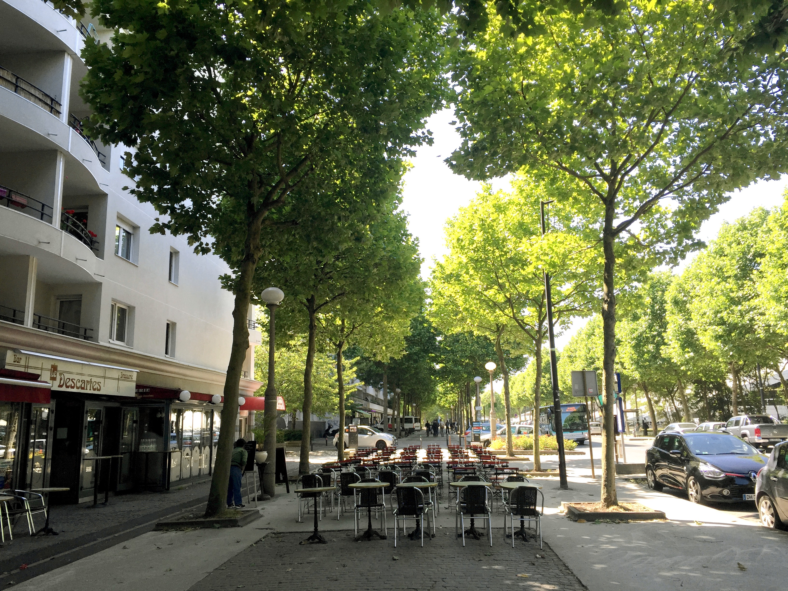
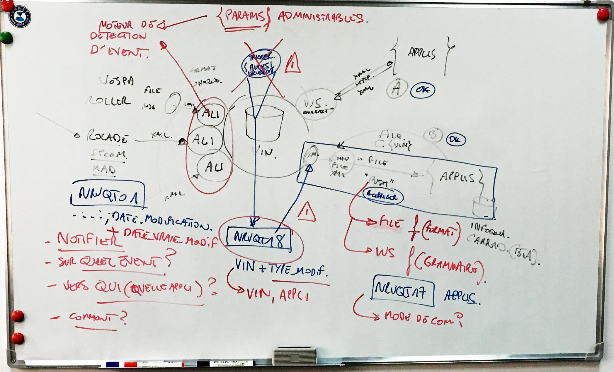
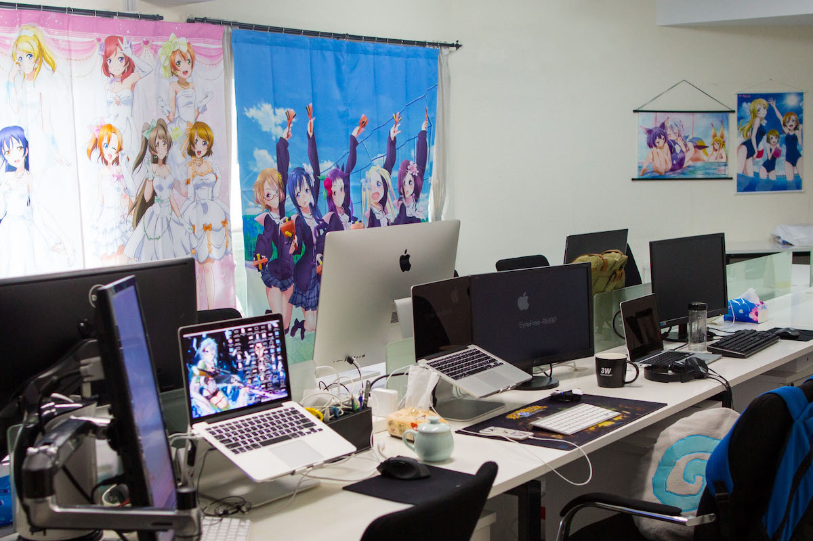

回望考研（一）：走过曲径
背景介绍
本人于16年9月辞职考研，经过六个月（其中三个半月的初试准备）顺利被某校”计算机技术“专硕拟录取。本文记录选择考研的动因和理由，交代工作和学习的背景，是系列文章中的第一篇。
面向人群
- 遇到技术和事业瓶颈的青年在职开发人员
- 勤奋能干但对前途迷茫的本科生，尤其是出身不好的本科生
- 来看个热闹的朋友和长辈们
- 若干年后的自己
一路幻灭的曲径
摄于阿姆斯特丹。
有首名曲叫《Boulevard Of Broken Dreams》 ， 中文常译作《梦碎大道》。 这是一首来自美国的摇滚乐，主要内容是为了难以实现的梦想奋斗过程中的绝望和孤独。
如果本地化的话，我更喜欢叫它“幻灭的曲径”。 我自己理想的破灭过程是随着认识的加深渐进和长期地推进的，主要的原因还是不谙世事。这样的理想，我更倾向于叫它幻想。 不管是多直多宽的 Boulevard ，在有限的阅历和负面的精神状态下都会变成难走的弯路。
但幻灭的曲径并不是黑暗森林这样残酷地彻底的东西，换一个角度看，走完这条曲径的过程就是拨云见日。
“Paris est toujours Paris!”

摄于笛卡尔大学城，大巴黎77省，我的宿舍附近。
爱它就黑它，在黑巴黎之前，需要声明一下我不是为黑而黑，更多的还是可惜和懊恼的情绪。
我深信我和法语的缘分。我在小学早早地因为强灌催吐式（例如学到英语六级类似水准）教育产生了严重的厌学情绪，初中又遇到了小学类似的一拨人，在高中只想划水。面对考不上本科的大危机我在最后一个月放手一搏，却不想竟然上了一本线。填志愿的时候我把上师大中法合作的计算机填在了信息机电计算机的前面，有点戏谑的成分在里面，因为我唯一拿得出手的就是语言了。
在出国之前我是一个新自由主义愤青美分，被微博上的公知带惯了节奏，我发自内心地觉得西方是某种程度上的乌托邦，在那里会有我的“同志”。
实际上在经过了考过法语B2、刷GPA等一系列对当时的我来说难度超高的动作之后，我发现巴黎本身是很让人失望的，至少让我这个上海土著很失望。
无论是从公共设施、公共服务、社会治安、国际化等各个方面，巴黎人的浪漫情怀就是对懒、傲慢和粗心的粉饰。这个城市做得不比上海好，老石头房子还有点情调，年轻人没有拼劲，罢工倒是闹得排山倒海，就像个坐吃山空的老牌资本主义遗孤，我们熟悉的所谓香颂在那里已然成为了nostalgie(这个genre就叫这个名字)。
另外有一些鲜活的例子来证明我说的话，比如“晚上不能出门”、“周末连自动售货机也停摆”、“比我能力稍强的穆斯林信仰同学只能找到一份SEO的工作”，更别谈像摆设一样的“全国紧急状态”了。
哪怕同一批出去的同学只有我最终通过了考试，其他人都要回国进行漫长而痛苦的学年重修，我也没有选择继续在法国的公立大学读书。学校本身不够好是主要原因，我没必要在这样的社会环境下生活下去也是一个重要的考虑。
“立足社会”

摄于 2016年3月29日 ，标志雪铁龙集团某 2000 年业务系统改造计划的会议上。原定我负责这个系统，但没过多久我就离职了。
回国就是大四，大四的任务就是实习和毕业。
我非常期待毕业的那一刻，因为我盘算和梦想多年的”凭本事吃饭“、”脱离僵化的体制“总算就要来到眼前了。 已经受够了量产庸才的”应试教育“和分化严重的“教育门阀制度”，是时候“立足社会”了。
我获得的第一份实习工作却不是因为我的计算机应用能力，而是因为程序员群体中会法语的少之又少。雇主是一家做欧美外包的公司，我过去的主要工作是解读需求和翻译文档。
职务看似卑微，但我在法语业务方面的表现很快打动了领导，恰巧来了一个资源丰富的、技术栈很新的项目，我又是离需求最近的人，本来说好的“七个月后才能摸代码”也不了了之了。
迅速地，我得以把对Web应用的直觉彻底发挥出来，经过高强度的一线需求洗礼，前后三个月我就掌握了解决Web开发的日常需求的能力。这段经历让人如沐春风。
因为技术和业务都懂一些，破天荒地，实习生当起了项目经理。我的很多同学也进入了这家公司，和还在“学校没教过这个”这种小儿科的问题上挣扎的他们比起来，我有了不小的优越感。 哪怕我的日常变成了和甲方的开会扯皮、带项目分任务、解决麻烦的extjs遗留问题甚至背锅，来自阿里的HR也像传说中的一样蛮横，因为我不可替代、很受器重，所以也愿意继续留着。
但不安却在渐渐浮现。
首先摆在面前的问题是是外包业务的 fragile，甲方因为业绩问题突然把它的IT支持团队整体裁撤并卖给了另一家外包公司，导致了整个IT部门持续良久的罢工。我们这里临近年关，当时小组的同事几乎全都走完了。
其次是外包公司人员的素质问题，打个难听的比方，外包公司就是IT界的“快手”，这里的技术栈、薪资、工作环境都落于互联网公司下风，最大的问题是人员综合素质较差。外包公司的同事们都很努力，他们有家要养、要买房落户，从这个意义上，工作只为了干巴巴的现金流和认同感的我很尊敬他们。但假如说技术和英语问题还可以补救，歧视女性、地图炮和老乡拉帮结派之类的中华土味就很难扭转过来了，这样的环境不适合年轻人。关于技术问题，可以参考 这篇文章。
在HR开出仅10W年薪的报价之后，我选择离开。期间我参与了六七家互联网公司的面试，通过了8成， “立足社会” 渐渐地不成问题，但是时候注意一下吃相了。
#互联网的“活力”和“不问出身”

作者为我的同事 totoro，某互联网初创公司的工作环境，猜猜哪个工位是我的？
抛开了之前的“业务优势”，薪资就是是能力的证明，这一证明甚至比钱本身更重要。 经过了一番权衡，我加入了一家主营日本动漫商品的互联网跨境电商。
我在那家公司从不加班，管理本身也很松散，不规定上下班时间。 公司给我施展的空间也不可谓小，具体说来就是一个人负责全新电商服务端的设计和开发。我把之前学到的知识融会贯通，在工期内交付了项目。
然而创业公司的管理能力、流程、资源都很有限，最初我们就是从三张设计图开始脑补系统的，三个月开发完成。很多设计到后期完全颠覆，返工严重，简直就中了教科书里“编程开始越早花的时间越长”的魔咒。
很不巧，运营的能力很弱但权力很大，对产品的决定权已经盖过了新招的产品经理，而且还能把老板搬来说服开发团队，因为在老板看来他才是“增长黑客”。
当时我相信领导的承诺，把系统先上线最重要，流程的问题会逐步改善的。但发现这一问题不仅没有改善，而且还愈演愈烈，最后老板亲自来乱改需求了。
有一晚暴怒，气到头疼欲裂，几个小时消退不了，长时间的紧张工作导致之后又发烧急病。脑袋昏昏沉沉的，却一直在想一位外包公司的同事对我说的话。
“我们做码农也就算了，你这少爷在这里干嘛？”
我不是什么少爷，但老江湖的一问直指核心。大家来工作都有各自的目的，或在沪买房，或供养家人，或回家盖房，代价是付出了精力去实现别人的发财梦。在我获得的东西里，最有价值的可能是对技术能力的肯定，但技术在业务主导的公司本来就不重要。
在林林总总的IT职业里，Web业务方面的开发是相对较浅的，无他，唯手熟尔。 互联网之所以是现在这个样子，是因为资本渴求它生产出更多优质的资产，行业繁荣和工资的水涨船高相互助推，资本推动了以前端、移动端为代表的一大批岗位近十年的繁荣，它们急需有生力量，然而哪怕北大青鸟和各大高校开足马力也不够用。
我们经常会推测这场Party什么时候结束，而谁又是其中受害最重的人。 根据法国的IT精英人才都被实业巨头圈走的现实、台湾高学历背景一职难求的现状和我国电信行业的发展历史，我主观地认为互联网的繁荣已经进入下半场，甚至已经进入尾声。 它也会像其他成熟行业一样渐渐缩减用人需求，对人才的出身提出更高的（甚至高到毫无必要）要求。 其中落差感最大的可能是把互联网当作金字招牌的人，退潮之后发现自己在裸泳。
幻灭是否定的否定
摄于法国尼斯附近的Entreveux小镇，小镇有一座用于关押一战德国战俘的堡垒，这是从牢房的窗口向外看的景色。在那一刻我明白了为什么说自由行可以给人启迪。
软弱是不成熟的一种表现，现实和利益就摆在眼前，却需要勇气和胆识去突破和识破。幻想是对现实的否定，幻灭是对幻想的否定，否定的否定构成了事物螺旋式发展的轨迹。
器重我的外包公司和初创公司都不甚理想，以我的背景和能力也很难到大厂去工作。除了就这么毫无目的地干三年混资历之外，有没有更好的方式呢？
当时恰逢地产热，我发现，工资的很大一部分是交给房东的，而我住着的房子租出去几乎可以覆盖我的工作收入。功利地说大厂的工作也不具性价比——到哪年哪月靠工资可以够得上有价值的资产呢？够不上有价值的资产，6k和20k就是吃穿好坏的区别，最大的区分就是它所代表的技术水平而已。
到头来这个薪资体系是彻头彻尾的玩弄感情啊！
然而即使工作的价值对于衣食无忧的人不那么大，但我也不认为我应该像很多土著孩子一样在家收租，为了家庭和睦幸福、在中产阶层扎地更深，我一定要持续进步，并且找到一条稳定的获取现金流和生活作息的路线。在不折腾父母的前提下，让我的努力最大程度地让自己持续获益，这样才是真正意义的“立足社会”。
首先想到的必然会想到自费出国留学，哪怕是便宜的欧洲，也不是我的选项。我付出大量不必要的精力在异国他乡的起居生活中，最终只是为了冲刺成为中产——一个在国内已经准备夯实的目标，是不理性的。但我不抵制出国留学，如果有公费的机会，而且可以拿到永居，在将来我会适时地抓住机会。
那么考研呗。
我的这个决定让几乎所有熟悉我的人感到意外，也受到了很大的反对。
先谈既定的收获，读出了硕士，我达成目标的赢面显然会更大。假如作出最保守的选择，一个研究所的工作符合之前提到的稳定作息+稳定现金流的定位；假如激进一些，之后考个博，就一定会有相应的机会出国读书拿永居，最重要的是，无论在哪种环境，我总是乐意找到合适的方法沉浸在自己的世界里。
再反驳典型的反对，例如 “考出来了，你不还是码农么？” “干三年，靠资历和技术照样进大厂。”
反对考研是对正统性的一种否认，华夏文明一直病态地执着于正统性，难免会干出一些损人不利己的事情，在一些群体里，人们谈正统色变。
然而在反对考研这件事上，我的立场是借来的，为了应付一种综合的恐惧——对自己应用能力不足的担忧、对教育体制内激烈竞争类应试的胆怯、对地位高人一头的名校和高学历人士的嫉妒。我反对考研，抛开当初对应用能力的合理担忧不谈，这样我就可以把社会评价对我不利的一个角度拒绝掉，它可以掩盖自己的问题。
既然解决了应用能力的问题，这就要掉过头来“重新收拾旧山河”。
Cool Guys Don’t Look At Explosions
一首很有画面感的流行乐，揶揄美式大片的英雄人物走出火海的经典镜头，图片是 MV 的截图。
提辞职、写文档、交接、匆匆走人，整个过程不过一两周。我离开对公司也造成了一定影响，底层业务开始全是我写，系统要别人接手固然有难度。我发现它自从我离开之后就没加过功能，还下线了。但我问心无愧，如果干活干得开心，我还会在温柔乡里混几年吧。记得那天是2016年9月3日，12月就要考研了。产品发布的蛋糕也没吃，我就匆匆离职了。 自此考研之路正式开始。